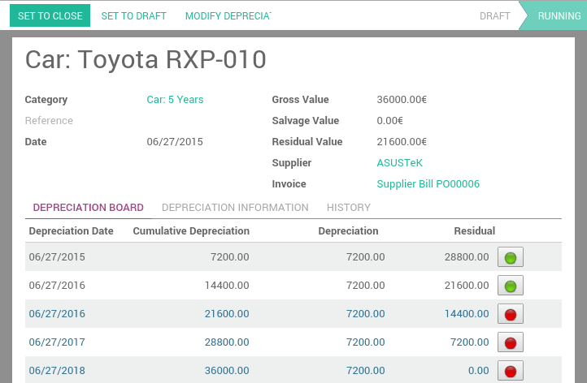

The "Assets" module allows you to keep track of your fixed assets like machinery, land and building. The module allows you to generate monthly depreciation entries automatically, get depreciation board, sell or dispose assets and perform reports on your company assets.
As an example, you may buy a car for $36,000 (gross value) and you plan to amortize it over 36 months (3 years). Every months (periodicity), Odoo will create a depreciation entry automatically reducing your assets value by $1,000 and passing $1,000 as an expense. After 3 years, this assets accounts for $0 (salvage value) in your balance sheet.
The different types of assets are grouped into "Assets Types" that describe how to deprecate an asset. Here are two examples of assets types:
- Building: 10 years, yearly linear depreciation
- Car: 5 years, monthly linear depreciation
Configuration
Install the Asset module
Start by installing the Asset module.
Once the module is installed, you should see two new menus in the accounting application:
Before registering your first asset, you must define your Asset Types.
Defining Asset Types
Asset type are used to configure all information about an assets: asset and deprecation accounts, amortization method, etc. That way, advisers can configure asset types and users can further record assets without having to provide any complex accounting information. They just need to provide an asset type on the supplier bill.
You should create asset types for every group of assets you frequently buy like "Cars: 5 years", "Computer Hardware: 3 years". For all other assets, you can create generic asset types. Name them according to the duration of the asset like "36 Months", "10 Years", ...
To define asset types, go to
 View Asset Types in our Online Demonstration
View Asset Types in our Online DemonstrationCreate assets manually
To register an asset manually, go to the menu .
Once your asset is created, don't forget to Confirm it. You can also click on the Compute Depreciation button to check the depreciation board before confirming the asset.
Tip
if you create asset manually, you still need to create the supplier bill for this asset. The asset document will only produce the depreciation journal entries, not those related to the supplier bill.
Explanation of the fields:
Create assets automatically from a supplier bill
Assets can be automatically created from supplier bills. All you need to do is to set an asset category on your bill line. When the user will validate the bill, an asset will be automatically created, using the information of the supplier bill.
Depending on the information on the asset category, the asset will be created in draft or directly validated. It's easier to confirm assets directly so that you won't forget to confirm it afterwards. (check the field Skip Draft State on Asset Category) Generate assets in draft only when you want your adviser to control all the assets before posting them to your accounts.
Tip
if you put the asset on the product, the asset category will automatically be filled in the supplier bill.
How to deprecate an asset?
Odoo will create depreciation journal entries automatically at the right date for every confirmed asset. (not the draft ones). You can control in the depreciation board: a green bullet point means that the journal entry has been created for this line.
But you can also post journal entries before the expected date by clicking on the green bullet and forcing the creation of related depreciation entry.
Note
In the Depreciation board, click on the red bullet to post the journal entry. Click on the Items button on the top to see the journal entries which are already posted.
How to modify an existing asset?
- Click on Modify Depreciation
- Change the number of depreciation
Odoo will automatically recompute a new depreciation board.
How to record the sale or disposal of an asset?
If you sell or dispose an asset, you need to deprecate completly this asset. Click on the button Sell or Dispose. This action will post the full costs of this assets but it will not record the sales transaction that should be registered through a customer invoice.